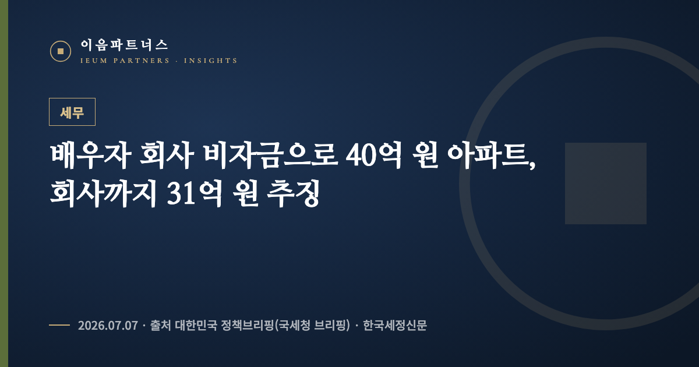

배우자 회사 비자금으로 40억 원 아파트, 회사까지 31억 원 추징

가족이 집을 살 때 회사 돈을 잠시 돌려 쓰는 일을 대수롭지 않게 여기기 쉽습니다. 그런데 국세청은 개인의 주택 자금출처를 조사하다 그 돈이 회사에서 나온 것을 확인하면 회사까지 조사를 넓히고 있습니다. 이 글에서는 2026년 7월 7일 국세청이 공개한 초고가주택 세무조사 사례를 중심으로, 법인 돈이 가족에게 흘러갈 때 생기는 일을 정리합니다.
집을 사면 신고한 소득·재산과 취득 규모가 함께 비교되기 때문에, 가족의 큰 지출은 자금출처 질문으로 이어질 수 있습니다. 회사 돈과 가족 돈이 섞여 있다면 지금 정리해 두는 것이 좋습니다. 우리 회사 자금 흐름이 걱정되신다면 카카오톡 채널 이음파트너스로 편하게 물어보셔도 됩니다.
어떤 일이 있었나
국세청은 2025년 10월 1일 초고가주택 등 부동산 탈세 혐의자 104명을 동시에 조사하기 시작해, 지금까지 318억 원을 추징했고 탈루 규모는 731억 원이라고 밝혔습니다(대한민국 정책브리핑). 그중 한 사례가 법인 대표님들께 시사하는 바가 큽니다.
50대 갑 씨는 강남권의 약 40억 원 규모 재건축 예정 아파트와 상가·토지를 사들였는데, 신고 소득과 재산에 비해 취득 규모가 커 조사 대상이 됐습니다. 자금을 따라가 보니 배우자가 운영하는 축산물 도매업체의 돈이었고, 국세청은 그 법인을 추가로 조사했습니다. 거래처와의 무자료 매출(세금계산서 없이 판 매출)로 만든 비자금 약 30억 원을 배우자가 따로 관리하다 갑 씨에게 몰래 증여한 사실이 드러났습니다(한국세정신문).
| 구분 | 내용 |
|---|---|
| 출발점 | 갑 씨의 부동산 취득 자금출처 조사 |
| 조사 확대 | 배우자가 운영하는 축산물 도매 법인을 조사 대상에 추가 |
| 확인된 사실 | 무자료 매출로 만든 비자금 약 30억 원을 갑 씨에게 증여 |
| 추징 | 법인의 매출 누락 법인세와 갑 씨의 취득자금 증여세 등 총 31억 원 |
개인 조사가 회사 조사로 번지는 이유
국세청은 집을 산 돈이 사업소득 누락이나 법인자금 유출과 관련되면 사업체까지 조사를 넓혀 법인세·소득세를 함께 추징했다고 밝혔습니다. 앞으로도 “탈세 위험요인을 조기에 포착하고, 탈세행위가 확인될 경우 세무조사를 실시”하는 등 강력하게 대응하겠다는 입장입니다(국세청 브리핑). 미등록 여행업 현금 매출 약 60억 원을 누락하고 아파트를 산 사례도 개인사업체까지 조사해 25억 원을 추징했습니다.
속임수로 세금을 피한 사실이 확인된 건에는 40%의 부당 과소신고가산세가 붙었습니다. 6명은 검찰에 고발됐고, 4명은 벌금 상당액 7억 원을 통고처분(고발 전에 벌금에 해당하는 돈을 내도록 하는 처분)받았습니다. 법인 돈이 가족에게 가면 증여세, 회사 법인세, 가산세와 형사 책임까지 한꺼번에 따질 수 있다는 점이 이번 사례의 교훈입니다.
대표님이 지금 확인할 것
- 가족이 집이나 큰 자산을 살 때 그 자금이 어디서 나왔는지 설명할 수 있는지
- 세금계산서나 카드 결제 없이 현금으로 받은 매출이 모두 신고됐는지
- 회사 계좌에서 대표나 가족 계좌로 나간 돈이 급여·배당·대여금 등 근거 있는 항목으로 정리돼 있는지
참고한 자료
- 초고가 아파트 등 부동산 탈세 조사로 731억 원 탈루금액 드러나 — 대한민국 정책브리핑(국세청 브리핑) (2026.07.07)
- 유출한 법인자금으로 아파트 취득했다 사업체까지 세무조사 — 한국세정신문 (2026.07.07)
회사와 가족 사이 자금 흐름을 어떻게 정리하면 좋을지 궁금하시다면 카카오톡 채널 이음파트너스에서 함께 살펴보실 수 있습니다.
※ 이 글은 일반적인 정보 제공을 위한 것으로, 개별 사안은 세무사·노무사 등 전문가와 함께 확인하시기 바랍니다.